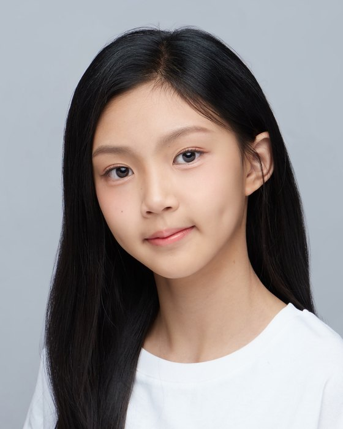

MFI
Junior Mermaid Level 1–5
Mermaid Federation International
Issued Aug 2025
TIEN HSI CHANG · OCEAN PORTFOLIO
BEST WITH SOUND ON

I've been in the water since I was six months old, and I've been swimming for 12 years.
When I was 4, my mom showed me a news story about a mermaid gathering. I was hooked, and I became a mermaid too.
I get my energy from people and love joining events.
I'm good at putting my ideas and feelings into words.
I love sharing my own story with others.
In the water since I was six months old, swimming for 12 years.
For speaking, performance and collaboration invitations, please send a message below, or reach out by email or LinkedIn.
The three most recent entries, newest first.
You cleared the water and found every pearl. This is the promise behind the portfolio.
Clear all the litter and find every pearl to unlock the Ocean Pledge.
Tell us a little about you and what you will do for the ocean and climate. You will get a personal certificate.